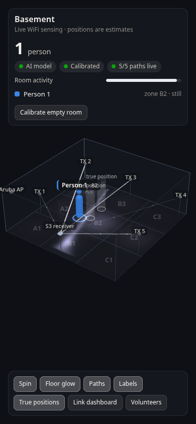

Seeing Through Wi-Fi

Clairvoyance finds people in a room using nothing but Wi-Fi. There are no cameras and no microphones. Small ESP32 boards around the room send radio packets to a receiver. A person's body absorbs and reflects those signals, and the Wi-Fi chip measures the change as Channel State Information (CSI). By watching which radio paths get disturbed, the system works out roughly where each person is standing and shows them live in a 3D model of the room.
How It Works
- Transmitters around the walls broadcast a tiny ESP-NOW packet 50 times a second.
- The receiver listens to every packet and measures its CSI: how strongly each of 52 Wi-Fi subcarrier frequencies arrived. It streams that data over UDP to the server.
- The server compares each radio path with a calibration of the empty room, filters out interference that hits every path at once, and finds the spot on the floor that best explains which paths changed.
- The AI model, once trained, takes over: it estimates which zone each person is in and how many people are there.
- The 3D view draws the room, the boards, the glowing radio paths, and each person, refreshed four times a second.

Teaching It the Room

Every room bends Wi-Fi differently, so the system learns each space. We taped a 3 × 3 grid on the floor, and a guided collection page told volunteers out loud which square to stand or walk in while it labeled the recordings automatically. Those sessions trained random forest models (scikit-learn) that predict each person's zone and the head count. In our simulator benchmark, the model placed one person in the exact square about 80% of the time, and it never showed a person in an empty room, even with heavy Wi-Fi interference.
Our Demo Setup
The demo used a mix of microcontrollers:
- Transmitters: mostly ESP32 dev modules and Seeed Studio XIAO ESP32-S3 boards. The XIAO transmitters used wire antennas.
- CSI receiver: an ESP32-S3 with a dipole antenna.
- Server: a Raspberry Pi 5 (8 GB) hosted the AI model and the demo script.
- Network: an industrial-grade enterprise access point hosted the Wi-Fi network on channel 11.
The 3D view runs in any browser on the same network, so visitors could watch it live on their phones.

Demo & Disclaimer
The map works with varying levels of success depending on the ESP32 board, Wi-Fi interference on the channel, and the number of transmitters.
For the best chance of success, we recommend 5 GHz transmitters and receivers using ESP32-C5 boards. If you need to use 2.4 GHz, use ESP32-C6 transmitters (or transmitters with dipole or wire antennas) and an ESP32-C6 receiver with a dipole or wire antenna.
Credits
Built by Team Mech Tech. See everyone who contributed on the repository's contributors page.
- Espressif esp-csi: our transmitter and receiver firmware builds on its
csi_send,csi_recv, andcsi_recv_routerexamples. - three.js: the 3D room view.
- Flask, NumPy, and scikit-learn: the server, signal processing, and AI model.